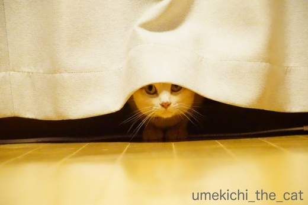
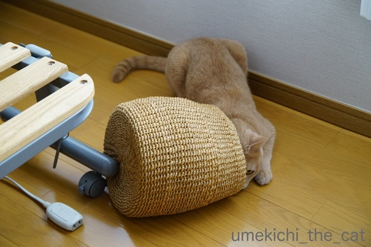

梅吉の主張 [梅吉]
と主張する梅吉さん


そんなにお顔が出ているのにですか(*>艸<)

虚無僧スタイルはもう日常の出来事。
今日は仏門に入ることに少し迷いがある様ですw

ローテーブルの下に潜り込むのも上手くなって来ました。
自分が「隠れている」と思っている時は思い切り目があってもスルーされます。
体を触ると
という反応(^▽^;)

懐かしい隠れ場所にもリトライ。そこには入らないでって言ったのに・・・(꒦ິ⌑꒦ີ)

この時は目があっても知らん顔されず、ドヤ顏されました・・・
埃まみれになるのがそんなに嬉しいんですかーー！！
掃除しなきゃ・・・・・( ；∀；)

隠れいている？と思うとそうでない事も。
ソファの背もたれの陰に潜んでいるところを覗き込んで見たところ・・・
この後お尻をぷりぷり振って飛びついて来ましたwww
アイシアの極楽ねこカレンダーに梅吉の写真が採用されることになりました。
応募した写真はこちら。
カレンダーで応募していた写真は全て採用不採用の連絡が来たので
来年の我が家のカレンダーは「猫めくり」と「極楽ねこカレンダー」の2冊に。
わー、ますます猫三昧です。
ソネブロにゃんこブロガーの方々に触発されて色々応募デビューして見た今年でしたが
自分でもびっくりするほどの好成績でした。
「beginner's luck」という言葉しか思い浮かびません。。
「賞金」も狙って見たのですがいのちつないだ♡ワンニャン写真コンテストは
落選しちゃいました。
浅ましい思いが見えちゃったかしら・・・ (^▽^;)
こちらはリュカさんのところのあおくんが見事賞をゲットされましたよ〜。すごいなぁ・・・
これからもどんどん応募したいなと思っていますがこれ以上の成果が出ることは
もうないんじゃないかと・・・
一生分の luck を使ってしまったかもね〜(￣-￣；)

カフェオレ色の梅吉

梅吉 2023年8月10日 永眠


梅吉と出会った譲渡会

犬猫の理由なき殺処分ゼロ
妄想広告
UMEKICHI 光

爆発的に早い！
時々攻撃的！
Thanks to Mr.Boss365
爆発的に早い！
時々攻撃的！
Thanks to Mr.Boss365

お猫様は自分が隠れてるつもりだと、どんなに見えてても「見えないはず！」と
思ってますよねぇ^^;
えぇ、うちのお猫様’ｓも隠れてるつもりの体をツンツンすると「ナンで？」って
怒りますｗ
なので、最近は見えない振りをします^^;
梅吉さん、食器棚の上に入り切れてないのにドヤ顔って^^;
by ニッキー (2017-09-21 17:56)
す・・・すげー・・・オープニングからドキドキしたけど、そのアドベンチャーな前進・・・「クレイジージャーニー」で観た、深海の細～い洞窟に突き進んでゆく「何故！！」を感じました～ﾍ(≧▽≦ﾍ)
by Ginger (2017-09-21 18:19)
何だかめちゃアピールしてる見たいに見えますね！
by みぃにゃん (2017-09-21 18:57)
梅吉さんしっかり顔が出ていますね！
逆に目立っています(^^)
by ma2ma2 (2017-09-21 19:13)
梅吉さん♪可愛すぎますぅ～♪
にゃんこはぺったんこになりますね(*^_^*)
冷蔵庫に足をかけて、棚の上に？？
なんだか居心地が悪そうにも見えますが
ご満悦なのですね♪
by きぃ (2017-09-21 19:57)
ついに食器棚(?)の上に行きましたかー。でも半分だけ。そのままグイグイ行くにはきつかったのかな? ぴったりハマってるところを見たいような気もします。
極楽猫カレンダーは落選の方が多かったのに、さすが梅吉さんです。訴えかけるような表情がとても良いですものね~。
by zombiekong (2017-09-21 20:27)
梅吉さんは平べったいのがお好き♪
しかし、食器棚なの上はそのまま前進し続けると戻れなくなりそう？！(^▽^;)
ウチのはよくドアと壁の隙間に無理やり入り込んで動けなくなり、方向転換しようとでんぐり返ししていることがあります。
梅吉さん、カレンダー2冊おめでとうございます＼(^o^)／
モデルさんの力と飼い主さんの愛の結晶ですね！
by ゆきち (2017-09-21 21:09)
梅吉さんは隠れるのが得意なんですね。
それも、わざと見つかる様に(^-^;
極楽猫カレンダーの写真は、潤んだ瞳に癒されます(^^♪
by riverwalk (2017-09-21 21:28)
今回はお茶目な梅吉さんに沢山出会えましよ。
2枚目の写真は真剣さが可愛いですね〜
食器棚の上から見下ろしていますね（笑）
カレンダ−2冊、おめでとうございます。
by kiki (2017-09-21 21:31)
梅吉さん、狭いところお好きですね！
天井と食器棚に挟まっている梅吉さんの伸びた足がイイ！
極楽猫カレンダー入選おめでとうございます！^^)
by yes_hama (2017-09-21 21:51)
梅吉さん、隠れてるつもり？
かわいいなー‥
高いところに無理やり突っ込んだはまりっぷりがたまりません♪
カレンダー２冊採用ですか☆すごい！
優しいまなざしが感じられる写真で、癒やされます＾＾
モデルさんも優しい毛色とひたむきなおめめで、かわいいですからね～＾＾
by sana (2017-09-21 22:54)
ニャンコは狭い場所が好きですけど
梅吉さんは限界に挑戦するタイプなんですね＾＾
by ぽちの輔 (2017-09-22 06:59)
梅吉さんたら、隙き間のお掃除に余念がありませんね＾＾
きっとホコリが許せないんだね。
by じゅらまろ (2017-09-22 12:22)
1枚目、2枚目の梅吉君、お目目がクリクリしていつになく可愛い(いつもですけど)ですよ。角かくしかぶったお嫁さんみたいฅˆ•ﻌ•ˆฅ♬
物かげに隠れて、獲物狙うごっこかな？獲物は…ちぃさん？ビックリさせて「わぁ」みたいになるのが楽しいのかな？
by BillK-ko (2017-09-22 15:18)
丸見えでも「これは隠れているつもりだな」と思ったら声をかけてはいけませんよ。プライドにかかわりますからね（笑）
猫とは入って欲しくないところに喜んで入るものと認識しています(#^.^#)
by palpal (2017-09-22 16:27)
隠れてる気まんまんでも、どこか見えてるんですよねー(笑)
それがおもしろくて可愛くて^^
虚無僧スタイル！惜しい！(笑)
もうちょっと頭が入っていたら完璧なのにねｗｗ
うちはカレンダー採用が好成績だったのは２年前だなあ。
去年は1冊、今年は0冊(笑)
でも他で賞が貰えたからいっか^^
梅吉君、おめでとうーーー！
来年もお互い頑張ろう！(笑)
by リュカ (2017-09-22 17:10)
梅吉くん上手に隠れてるよ～(^-^)
自分が隠れているつもりの時。目が合ってもスルー。触られても・・・。
わかり過ぎて笑っちゃう。でもそれが梅吉ルールだもんね。
極楽ねこカレンダーの採用もおめでとう♪来年もたくさん採用されるといいね。
買う方も知っている猫ちゃんが出ているとテンション上がるよ～～っ！！
勝手にエッヘン状態<(｀^´)>
家の子も応募してみようかな？って思うこともあるんだけど
忘れちゃうダメな私・・・。
by emi (2017-09-22 22:51)
極楽ねこカレンダーの梅吉さんも
イイオトコに写ってますね☆＾＾
それにしても、キッチンの棚の隙間に入るあの表情には、
惚れてしまいますね～( ´艸｀)
by マーヤ (2017-09-23 00:47)
ニッキーさん＞そうそう、見えないふりが大切なのですよね！
それも大切な下僕の務めと心得ておきま〜す(*>艸<)
食器棚の上、かくれんぼと同様に体の一部でも入れば制覇した！！
と思っているのでしょうwwwww
Gingerさん＞アドンベンチャーな前進、フロンティアスピリッツにも
満ちている梅吉なんですよ(*>艸<)
誰も入ったことのないところは「わしがいかなあかん・・・」
という使命感に燃えている様であります！！でもやめて〜〜〜〜
みぃにゃんさん＞隠れたい！見つかりたい！！の気持ちが
せめぎ合った結果こうなりました(^▽^;)
ma2ma2さん＞見つけてもらえないのも不満なんですよ〜＾＾
バッチリ見えているのに見えないふり。
そして適度なところで気づいたふり・・・猫飼いは大変ですw
きぃさん＞頭側は窮屈、後ろ足は踏ん張って・・・なんですが
達成感によるどや顏だった様です( ^ω^ ）
狭〜い隙間にグイグイ入ってくれたのでホコリが綺麗に取れました。
（梅吉に付いて・・・・）( ；∀；)
zombiekongさん＞とうとう入り込まれてしまいました( ；∀；)
グイグイ進んでいく途中で「や〜め〜て〜」と声をかけたので
我に返った感があります^^;
放っておいたら奥まで入り込んで消防レスキューみたいなことになったかも！？
極楽猫カレンダー、
初回投稿優先枠みたいなのがあったんじゃないかと睨んでますw
ゆきちさん＞隙間に入り込んだ時、こてつくんはでんぐり返しなんですね＾＾
梅吉は若干パニクりながら強引にバックして来ます。
この時は・・・ゲラゲラ笑いながら写真を撮っていたので覚えていません^^;
カレンダーやりました〜。新人枠でしょうか！？
riverwalkさん＞下僕がちゃんと見つけられる様に
完璧に隠れない高度なテクを身につけている梅吉です(^_－)☆
カレンダーの写真、おもちゃを凝視しすぎてウルウル来ていたのかも〜(*>艸<)
kikiさん＞２枚目の写真、昔の看護婦さんかシスターみたいじゃないですか？＾＾
私は見た瞬間「あ、マザー・テレサ」と思いました(≧▽≦)
食器棚の上からは場所も態度も「上から目線」そのものでした〜ww
カレンダー、自分でもびっくりです！
yes_hamaさん＞後ろ足ぐい〜んと突っ張っていますよね(*>艸<)
実は足をプルプル震わせてながら「みてみて〜」だったのかもしれませんねw
カレンダー2冊・・・どこに置こうか思案中です♪
sanaさん＞隠れているったら隠れています (^▽^;)
ひたむきなおめめ、お気づきになりましたか！！
この写真を撮った当時一番気に入っていたおもちゃ（椅子足ソックス(*>艸<)
を振り回すのを真剣にひたすら真剣に目で追っていた瞬間を
撮影したんですよ〜。
ぽちの輔さん＞向上心が溢れているのは良いことですが
掃除していない隙間を目指すのはお許しいただきたいのです・・・( ；∀；)
じゅらまろさん＞ホコリが許せない・・・
家は許せないところがたくさんあるな〜。
そうなると梅吉お掃除活動、まだまだ続くのね。。。
BillK-koさん＞ぷぷっ(*>艸<)黒目がちでいつになく可愛いでしょー！
夜を味方につけるとこうなります。
耳を隠した写真、私は昔の看護婦さんかシスター（マザー・テレサ）
と思いましたよ＾＾
気づかないふりして大げさに驚くのも下僕の務めですから。
演技力がついて来たわwww
palpalさん＞お猫様のプライドを傷つけない様に気をつけるわー！
目があっても気づかないふりができる様に頑張らなきゃ(*>艸<)
リュカさん＞そうそう＾＾
中途半端なおマヌケぶりが狙ってるんじゃなくて、大真面目なところが
可愛いんだよねー。猫っていいね！！
今年は梅吉のにゃん生最大のモテ期だったのかもしれません(*>艸<)
でも来年も頑張るー。来年もお互いどんどん応募しましょうね＾＾
emiさん＞お家でヒエラルキーの頂点に立つ梅吉ルールには
従わなければなりません(*>艸<)
楽しいルールだから大歓迎だしね！！
可愛い被写体が沢山いるemiさんのお家。
ぜひぜひ応募して見て(^_－)☆
マーヤさん＞極楽ねこ・・には寄り目や白目ばっかりでもね、と
真面目路線でせまってみましたよ(^_－)☆
でも梅吉の素顔は食器棚の上の隙間に入り込んでいる
ドヤ顏ですから〜w
惚れてくれてありがとうっ！
by ちぃ (2017-09-23 13:18)
梅吉さん、さすが隠遁の術の使い手ですにゃ(^.^)
･･･それにしても、その食器棚の上ツッコミは、なんだろう。。
足は、冷蔵庫の上で踏ん張ってらっしゃいますね。。
お小さい頃は、完全に入ることができたのでしょうか？
写真コンテストの入選は、当然の結果ですよ♪
だって、梅吉さん、バツグンの被写体だし、写真は、すごくお上手ですもん♡
by のらん (2017-09-23 14:18)
えっ、ワタシには梅吉さんがどこにいるか分かりませんでした～(笑)
しかし、ニャンコの感情って子供みたいで可愛い過ぎます（≧▽≦）
by ひでぷに (2017-09-23 20:05)
のらんさん＞幼い頃は食器棚の上の隙間に完全に入り込んで
方向転換して戻ってくる事も出来ました〜。
自分の体が大きくなっている事、気づいていないんでしょうね(*>艸<)
行動が活発で面白い梅吉はシャッターチャンスが沢山！！
そのチャンスを逃さない様にこれからも精進いたします(๑˃̵ᴗ˂̵)و
ひでぷにさん＞正直者には梅吉の姿が見えないのかもしれませんねー(*>艸<)
それともひでぷにさんの脳は「猫様が隠れていると主張したら見えない」と
視覚を遮断するとか・・・(*>艸<)(*>艸<)
街で感情の赴くままに行動する３〜５歳くらいのちびっこを見かけると
「あ、梅吉だ！」って思いますwwwww
by ちぃ (2017-09-24 20:19)
ニャンコの半かくれ、大好きです♪
ところで、梅吉さんを見ると
ミルクティーが飲みたくなっちゃうんですよ~。
ほんとにきれいな毛色で。
カレンダー、おめでとうございます＾＾
by ふにゃいの (2017-09-24 21:58)
ふにゃいのさん＞これからの季節ほっこり暖かな梅吉色のドリンク♬なんて〜。
やんちゃ坊主な梅吉なので我が家では「カフェオレ兄ちゃん」
なんて呼んでいます(≧▽≦)。ちょっとビターな感じ！
猫の保険の毛色登録も「カフェオレ色」にしてあります。
ミルクティーだったらピリッとスパイスの効いた「チャイ」かな？＾＾
カレンダーやりました！！自分でもびっくりですよ(＠◇＠)
by ちぃ (2017-09-25 14:57)